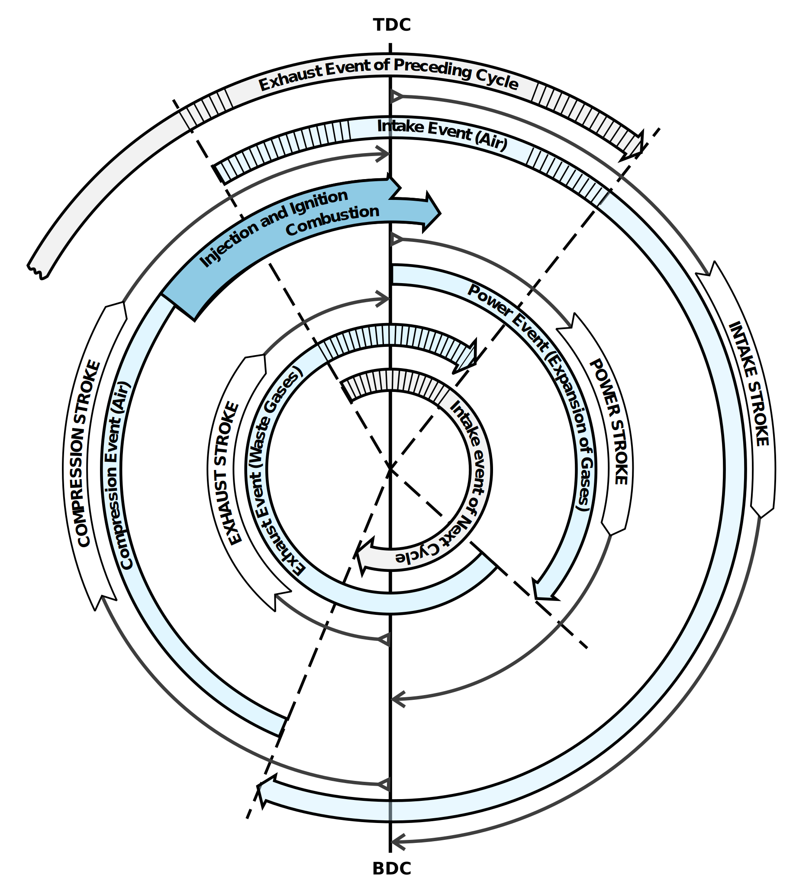

Subsection 1.1.1 Four Stroke Cycle
As mentioned previously, in a four-stroke engine the piston will go down and up twice and the crankshaft will make two complete rotations while the engine completes one cycle.
The events occurring during each cycle are shown graphically in Figure 1.1.2 , which is known as a timing diagram . The timing of these operations are controlled by a camshaft . In a four-stroke engine the camshaft rotates at half the speed of the crankshaft. This means that the crankshaft must make two complete revolutions before the camshaft will complete one revolution.
It’s important to keep in mind how quickly these actions to occur. Very little time is available to move exhaust gas out of, and fresh air into the cylinders, to compress the air, to inject fuel, and the fuel to burn. If a four-stroke diesel engine is running at a constant 2100 revolutions per minute, the crankshaft would be rotating at 35 revolutions, or 12,600 degrees per second. One stroke is completed in about 0.01429 seconds. In the discussion to follow, all the timings and angles given are approximate and vary from engine to engine.

We will now discuss the operation of four-stroke engine as it passes through one complete cycle. For the purpose of the discussion, we will assume that the engine is normally aspirated with intake and exhaust valves, and has a 3.5-inch bore, a 4-inch stroke and a 16:1 compression ratio.
Intake.
During the intake stroke fresh air for combustion is admitted into the cylinder. This event actually begins slightly before the end of the previous cycle.
As the piston moves upward and slightly before top dead center (BTDC), the intake cam opens the intake valve. The intake stroke begins while the exhaust valve is still open. The flow of the exhaust gases will have created a low pressure condition within the cylinder and will help pull in the fresh air charge. The piston continues its upward travel through top dead center (TDC) while fresh air enters and exhaust gases leave.
Shortly after top dead center (ATDC), the camshaft rotates so that the exhaust cam starts allow the exhaust valve to close. The necessary force is supplied by a valve spring , which was compressed when the valve was opened. The time frame during which both the intake and exhaust valves are open is called valve overlap and is necessary to allow the fresh air to help scavenge (remove) the spent exhaust gases and cool the cylinder. In most engines, 30 to 50 times cylinder volume is scavenged during overlap. This cool air also provides cools the engine parts. As the piston passes TDC and begins to travel down the cylinder bore, the movement of the piston creates a suction and continues to draw fresh air into the cylinder.
Compression.
During the compression stroke, the air in the cylinder is compressed to high pressure and temperature.
At about 35° after bottom dead center (ABDC), the intake valve closes. The point when the intake valve closes, the air charge is at normal pressure (14.7 psia) and ambient air temperature (~80°F).
At about 70° BTDC, the piston has traveled about 2.125 inches, or about half of its stroke, thus reducing the volume in the cylinder by half. The temperature has now doubled to ~160°F and pressure is ~34 psia.
At about 43° BTDC the volume is once again halved. Consequently, the temperature again doubles to about 320°F and pressure is ~85 psia.
When the piston has traveled to 3.530 inches of its stroke the volume is again halved and temperature reaches ~640°F and pressure 277 psia.
When the piston has traveled to 3.757 inches of its stroke, or the volume is again halved, the temperature climbs to 1280°F and pressure reaches 742 psia.
With a piston area of 9.616 sq. in. the pressure in the cylinder is exerting approximately 7135 lb or 3-1/2 tons of force. The above numbers are ideal and provide a good example of what is occurring in an engine during compression. In an actual engine, pressures reach only about 690 psia. This is due primarily to the heat loss to the surrounding engine parts.
Fuel Injection.
Fuel in a liquid state is injected into the cylinder as a fine mix ( atomization ), as shown in Figure 1.1.3 . The fuel must be injected at a precise time and rate to ensure that the combustion pressure on the piston occurs neither too early nor too late.
The fuel enters the cylinder where the heated compressed air is present; however, it will only burn when it is in a vaporized state (attained through the addition of heat to cause vaporization) and intimately mixed with a supply of oxygen. The first minute droplets of fuel enter the combustion chamber and are quickly vaporized. The vaporization of the fuel causes the air surrounding the fuel to cool and it requires time for the air to reheat sufficiently to ignite the vaporized fuel. But once ignition has started, the additional heat from combustion helps to further vaporize the new fuel entering the chamber, as long as oxygen is present. Fuel injection starts at 28° BTDC and ends at 3° ATDC; therefore, fuel is injected for a duration of 31°.
Power.
During the power stroke, the expanding gases force the piston down and drive the load.
Both intake and exhaust valves are closed, and the fresh air charge has been compressed. The fuel has been injected and is starting to burn. After the piston passes TDC, heat is rapidly released by the ignition of the fuel, causing a rise in cylinder pressure. Combustion temperatures are around 2336°F. This rise in pressure forces the piston downward and increases the force on the crankshaft.
The energy generated by the combustion process is not all harnessed. In a two stroke diesel engine, only about 38% of the generated power is harnessed to do work, about 30% is wasted in the form of heat rejected to the cooling system, and about 32% in the form of heat is rejected out the exhaust. In comparison, the four-stroke diesel engine has a thermal distribution of 42% converted to useful work, 28% heat rejected to the cooling system, and 30% heat rejected out the exhaust.
Exhaust.
During the exhaust stroke, the exhaust valves open and the exhaust gases start to flow out of the cylinder. This continues as the piston travels up to TDC, pumping the spent gases out of the cylinder. At TDC the second crankshaft rotation is complete.
As the piston approaches 48° BBDC, the cam of the exhaust lobe starts to force the follower upward, causing the exhaust valve to lift off its seat. The exhaust gases start to flow out the exhaust valve due to cylinder pressure and into the exhaust manifold. After passing BDC, the piston moves upward and accelerates to its maximum speed at 63° BTDC. From this point on the piston is decelerating. As the piston speed slows down, the velocity of the gases flowing out of the cylinder creates a pressure slightly lower than atmospheric pressure. At 28° BTDC, the intake valve opens and the cycle starts again.